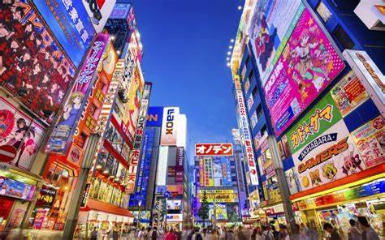

AKIHABARA
Akihabara, also called Akiba after a former local shrine, is a district in central Tokyo that is famous for its many electronics shops. In more recent years, Akihabara has gained recognition as the center of Japan's otaku culture, and many shops and establishments devoted to anime and manga are now dispersed among the electronic stores in the district.